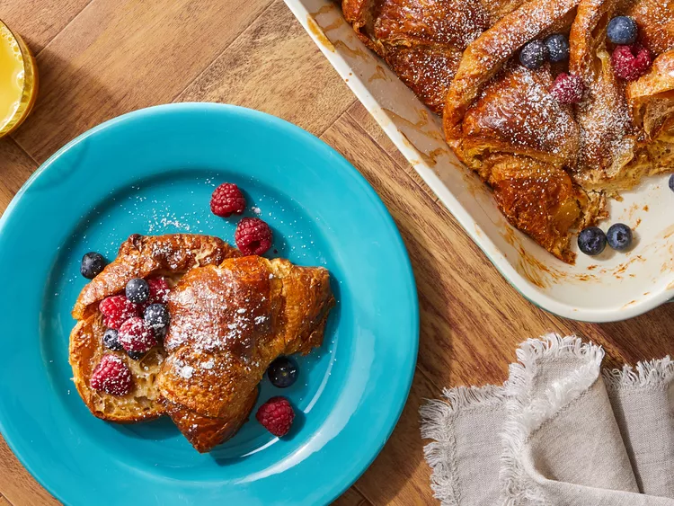

Croissant French Toast Bake

Description
This croissant French toast bake is perfect for company or a holiday brunch—a grander version of breakfast pudding or baked French toast.
Buttery croissants crisp on the top, and make it look as if you spent all day, but it is very easy to put together.
Ingredients
- Cooking spray
- 6 large eggs
- 1 cup milk
- 1/2 cup heavy cream
- 2 tablespoons brown sugar
- 2 teaspoons vanilla extract
- 2 teaspoons ground cinnamon
- 1/4 teaspoon salt
- 8 large croissants (about 1 1/4 pounds), halved horizontally
- Confectioner's sugar, fresh berries, or maple syrup for serving
Steps
- Gather all ingredients. Preheat the oven to 350 degrees F (175 degrees C). Generously coat a 9x13-inch baking dish with nonstick cooking spray.
- Whisk together eggs, milk, heavy cream, brown sugar, vanilla, cinnamon, and salt in a large bowl.
- Dip each croissant half in the egg mixture until fully soaked.
- Arrange dipped croissants in the prepared baking dish, overlapping as needed. Pour any remaining egg mixture over croissants.
- Bake in the preheated oven until golden brown and a knife inserted in the center comes out clean, about 30 minutes.
- Let stand 15 minutes before serving. Serve with desired toppings.